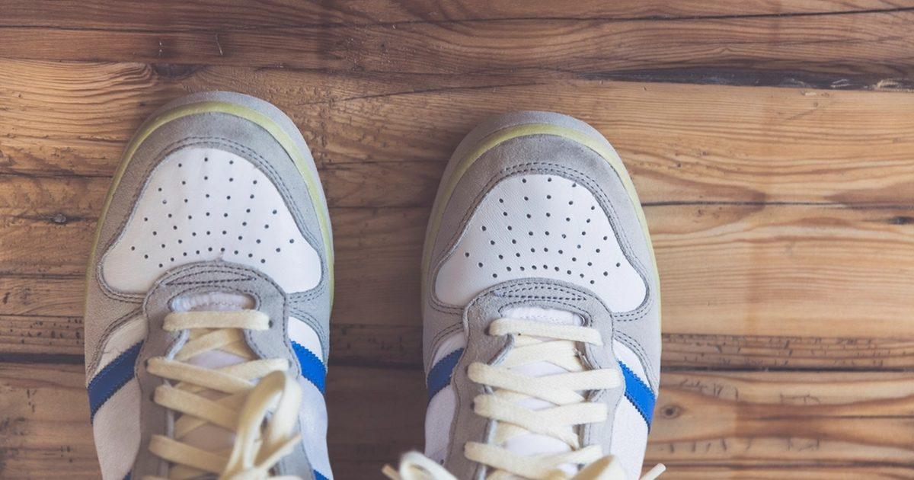

Quick Workouts & Plans
20-Minute Home HIIT Workout With No Jumping
Interval training gets its effect from intensity, not from impact. Every jump in a standard HIIT session has a low-impact substitute that works just as hard — here is the whole workout rebuilt around them.

High-intensity interval training does not require jumping. It requires intervals of genuinely hard effort separated by recovery. Burpees, jump squats and jumping jacks are simply convenient ways to reach that effort with no equipment — they are not the mechanism.
That distinction matters if you live above someone. You can keep the entire training effect and drop every impact movement, provided you replace them with something that actually raises effort rather than something that merely looks similar. The full noise problem is covered in quiet home workouts; this is one complete session built on that principle.
Why HIIT ended up full of jumping
Reaching a high heart rate with no equipment is easiest when you move a large mass quickly, and the cheapest way to do that is to launch your bodyweight off the floor. Jumping is not magic; it is convenient.
The alternatives have to work harder in a different way. There are three levers: recruit more muscle at once, extend the time under tension, or reduce the rest. This workout uses all three.
The 20-minute workout
Four rounds of five exercises. Forty seconds of work, twenty seconds of rest, with a sixty-second break between rounds. That is twenty minutes almost exactly, including a short warm-up.
Warm up first — ninety seconds of marching, ten slow squats and ten arm circles. There is a longer version in the five-minute warm-up guide.
| # | Exercise | Work | Rest | Replaces |
|---|---|---|---|---|
| 1 | Fast step-back lunge | 40s | 20s | Jump lunge |
| 2 | Squat to stand, continuous | 40s | 20s | Jump squat |
| 3 | Push-up to shoulder tap | 40s | 20s | Burpee |
| 4 | Skater step, no hop | 40s | 20s | Skater jump |
| 5 | Mountain climber, slow and long | 40s | 20s | High knees |
Fast step-back lunge
Step back, drop the back knee towards the floor, drive up and immediately step back with the other leg. The pace is brisk but the feet stay in contact with the ground. Hold a doorframe if balance is the limiting factor rather than effort.
Squat to stand, continuous
Squat down, stand fully, repeat with no pause at either end. The continuity is what makes it hard — most people rest at the top without noticing. Keep the heels down; if they lift, work on it via the squat form guide.
Push-up to shoulder tap
One push-up at whatever incline you can control, then one tap to each shoulder while resisting hip rotation. This replaces the burpee's whole-body demand without the drop to the floor and the jump back up.
Skater step
Step wide to one side, letting the trailing leg cross behind, then reverse. Same lateral pattern as a skater jump, no flight phase. Speed comes from the legs, not from bouncing.
Mountain climber, slow and long
From a push-up position, draw one knee towards the chest and return it under control. Slower than the usual frantic version and with a longer reach, which increases the core demand and eliminates the drumming noise.
The substitution table
Beyond this session, most jumping exercises have a direct low-impact equivalent. Use these to convert any HIIT routine you find elsewhere:
| Instead of | Do | Why it still works |
|---|---|---|
| Burpee | Push-up to shoulder tap, or step-back burpee | Keeps the full-body demand, removes the flight and landing |
| Jump squat | Continuous squat with a 3-second descent | Time under tension replaces peak power |
| Jumping jack | Standing side step with overhead reach | Same limb pattern, no impact |
| High knees | Fast standing march | Similar cadence, one foot always down |
| Box jump | Step-up with a pause at the top | Loads the same muscles, removes the landing |
| Skater jump | Lateral skater step | Identical pattern minus the flight phase |
| Mountain climber (fast) | Slow long-reach mountain climber | More core tension, less noise |
Intensity is a physiological state, not a movement pattern. You can reach it with both feet on the floor.
How hard is hard enough
The honest difficulty with low-impact intervals is that they are easier to cheat. A jump squat is self-policing; a continuous squat can quietly become a comfortable one.
Two ways to check. The talk test is the practical one: during a work interval you should be able to say a few words, not a sentence. Mayo Clinic describes this as the vigorous-intensity threshold, and it needs no equipment.4 If you want a number, a heart rate monitor and a target of roughly 80–90% of your estimated maximum during the work intervals is the usual guidance.
Interval training of this kind has been shown to improve cardiorespiratory fitness across a range of populations, including older adults.3 But the improvements follow the intensity, so an interval session done at moderate effort is just a moderate workout with unnecessary stopping.
Making it genuinely quiet
- Train away from the middle of the room. Floors transmit most vibration at the centre of a span; nearer a supporting wall is measurably quieter.
- Use a thick mat. For impact noise, thickness and density matter more than surface texture. Which mats actually help is covered in exercise mats for noise reduction.
- Watch the hands, not just the feet. Mountain climbers and plank work put repeated force through the palms. A mat under your hands matters as much as one under your feet.
- Mind the hour. The same noise at 7am and 11pm are different problems socially, whatever the decibel meter says.
How often to do it
Two to three times a week, not on consecutive days. Interval work at genuine intensity is demanding, and it competes for recovery with strength training. If you are also doing the 15-minute strength circuit, alternate them rather than stacking them.
Adult guidance is 150–300 minutes of moderate or 75–150 minutes of vigorous activity a week, plus muscle-strengthening work twice weekly.1 Two sessions of this cover a solid share of the vigorous half.
Who should be careful with this
Interval training at genuine intensity is more demanding on the cardiovascular system than steady moderate exercise, and that is worth stating plainly rather than burying.
Speak to a doctor before starting interval work of this kind if you have a diagnosed heart condition, uncontrolled high blood pressure, or a history of chest pain or fainting on exertion; if you are pregnant or recently postpartum; if you are returning from a long period of inactivity; or if you are managing a condition where sudden intensity changes matter, such as diabetes. This is not a formality. Interval training is one of the few home workout formats where the intensity is the point, and the intensity is exactly what needs clearing.
You feel chest pain or tightness, become dizzy or faint, notice an irregular heartbeat, or experience shortness of breath that is out of proportion to the effort. Heavy breathing during a work interval is expected; the symptoms above are not.
Progressing it over eight weeks
The most common mistake with interval training is running the identical session for months and expecting continued adaptation. Four rounds of the same five exercises will stop producing improvement within about six weeks.
Three levers, applied one at a time rather than all at once:
| Weeks | Work / rest | Rounds | Change |
|---|---|---|---|
| 1–2 | 40s / 20s | 3 | Learn the movements, keep effort moderate |
| 3–4 | 40s / 20s | 4 | Add the fourth round |
| 5–6 | 45s / 15s | 4 | Shorten the rest, not the work |
| 7–8 | 45s / 15s | 4 | Harder variations: deficit lunges, feet-elevated push-ups |
After week eight, take an easier week before restarting at week five's settings with the harder variations. Whether bodyweight trainees genuinely need structured deloads is a fair question, and one covered in deload weeks for home training.
Do not progress by adding exercises. Five movements covering the whole body is already enough variety for a twenty-minute session; adding a sixth just reduces the number of rounds you can complete.
Where to go next
If noise is your main constraint rather than impact specifically, start with quiet home workouts. If you want the strength side of the week handled, the three-day split slots this in as conditioning.
Frequently asked questions
Is HIIT without jumping still effective?
Yes, provided the effort is genuinely high. The training effect of interval work comes from reaching and repeating a high intensity, not from impact. Low-impact substitutes reach the same intensity by recruiting more muscle, extending time under tension or shortening rest.
Can I do this workout in an upstairs flat?
That is what it is designed for. Nothing in it leaves the floor. For further noise reduction, train nearer a supporting wall rather than the middle of the room and use a thick, dense mat under both hands and feet.
How do I know if I am working hard enough?
Use the talk test. During a work interval you should be able to get out a few words but not a full sentence. If you can hold a conversation, the interval is not vigorous.
How many times a week should I do HIIT?
Two to three sessions, on non-consecutive days. Interval training at real intensity is demanding and competes with strength training for recovery, so alternate rather than stacking them.
Is 20 minutes long enough for HIIT?
Yes. Interval sessions are short by design because the intensity cannot be sustained for long. Twenty minutes including warm-up is a standard and well-supported session length.
Do I need equipment for this workout?
None. A mat helps with comfort and noise, and a doorframe or wall is useful for balance during the lunges, but neither is required.
Sources and further reading
- World Health Organization. WHO Guidelines on Physical Activity and Sedentary Behaviour. 2020.
- NHS. Physical activity guidelines for adults aged 19 to 64.
- Wu ZJ, Wang ZY, Gao HE, Zhou XF, Li FH. “Impact of high-intensity interval training on cardiorespiratory fitness, body composition, physical fitness, and metabolic parameters in older adults: A meta-analysis of randomized controlled trials.” Experimental Gerontology, 2021;150:111345. PubMed.
- Mayo Clinic. Exercise intensity: How to measure it.
Comments
Comments are not enabled yet. Add a hosted comment embed (Disqus, Commento, Giscus) inside this container when you are ready.